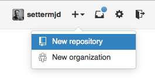

Vamos cuidar de passar nosso projeto para o GitHub Para isso, faça seu login, clique no sinal de soma (+) no canto superior direito e, no menu suspenso, clique em New repository. Isso dará acesso ao formulário de criação de um projeto.

No campo Repository name, adicione um nome. Não precisa de nada especial. Pode ser “primeiro projeto”. Se quiser, faça uma breve descrição. Talvez “Meu primeiro projeto no GitHub”. Em seguida, mude o padrão do projeto para “Public”. Isso fará com que qualquer um consiga acessá-lo.
Por fim, clique em Initialize this repository with a README e deixe os dois checkboxes marcados como None. Agora, clique em Create repository.
Isso nos conduzirá à página de configuração. Esta página oferece uma série de informações sobre a integração do novo projeto GitHub e o repositório local já existente. Vamos adicionar o GitHub como um controle remoto para nosso projeto.